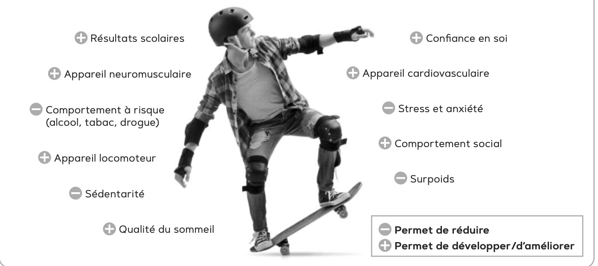
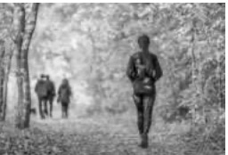

Objectif Global : Préserver sa santé par une activité physique régulière.
ACTIVITÉ 4 : L'intérêt d'une activité physique régulière
Objectif : Démontrer l'intérêt d'une activité physique régulière sur la santé.
Doc 9 : La sédentarité chez les jeunes
La sédentarité est un mode de vie caractérisé par une activité physique faible, voire inexistante. Une étude publiée en novembre 2019 a compilé des données recueillies auprès de 1,6 million d'adolescents âgés de 11 à 17 ans issus de 146 pays. Ces derniers ont été interrogés sur leurs dépenses physiques (sport, déplacements actifs, tâches domestiques...). Il ressort que plus de 80 % des jeunes pratiquent moins d'une heure d'activité physique par jour. De nombreux facteurs peuvent expliquer cette progression de la sédentarité : manque d'informations sur les recommandations officielles, niveau d'équipements insuffisant, augmentation du temps consacré aux écrans... Un phénomène d'autant plus inquiétant que l'impact de la sédentarité sur la santé est aujourd'hui bien établi : risque accru de surpoids, de maladies chroniques, moindres performances en termes d'apprentissage...
Question 1Identifier les causes de la sédentarité chez les jeunes (relève dans le texte).C1
Question 2Indiquer les effets de la sédentarité chez les jeunes (relève dans le texte).C1
Doc 10 : Les bienfaits de l'activité physique sur le corps
L'activité physique, en particulier chez les jeunes, présente de nombreux intérêts, pas seulement sur la santé physique, mais également sur le bien-être mental et social.

Liste des éléments du schéma : Résultats scolaires, Appareil neuromusculaire, Comportement à risque (alcool, tabac, drogue), Appareil locomoteur, Sédentarité, Qualité du sommeil, Confiance en soi, Appareil cardiovasculaire, Stress et anxiété, Comportement social, Surpoids.
Question 3Différencier les effets bénéfiques en les classant dans le tableau.C2
Sélectionne la bonne catégorie pour chaque bienfait :
Bienfait
Catégorie (Physique, Mental, Social)
Appareil locomoteur
Confiance en soi
Comportement social
Stress et anxiété (Réduit)
ACTIVITÉ 4 (Suite)
Question 4Justifier l'intérêt de la pratique d'activité physique dans chaque situation.C5
Activités
Intérêts (Complète la phrase)
Mathieu a rencontré Justine au footing, ils sont amis.
La pratique a permis à Mathieu d'améliorer :
Vanessa a perdu 3 kilos depuis le handball.
La pratique a permis à Vanessa de réduire :
Émilie s'énerve moins au travail depuis le yoga.
La pratique a permis à Émilie de réduire :
Mickael a arrêté de fumer depuis la boxe.
La pratique a permis à Mickael de réduire :
Rachel a une meilleure endurance cardiaque.
La pratique a permis à Rachel d'améliorer :
Matéo dort mieux après le sport.
La pratique a permis à Matéo d'améliorer :
Question 5Identifier la nature du bien-être pour chacune des situations.C2
Coche la bonne case pour chaque personne :
Mathieu :
Vanessa :
Émilie :
Mickael :
Rachel :
Matéo :
ACTIVITÉ 5 : Les recommandations en matière d'activité physique
Objectif : Présenter les recommandations en matière d'activité physique.
Doc 11 : Les recommandations de l'OMS
Il est important de pratiquer une activité physique au quotidien. Cette activité physique peut avoir une intensité élevée (pratique intensive d'un sport en club par exemple) à modérée (activités simples tout au long de la journée, comme de la marche, du ménage...). L'OMS recommande aux jeunes de 5 à 17 ans de pratiquer une activité physique d'intensité modérée à élevée au moins 60 minutes par jour.
Question 1Indiquer la recommandation de l'OMS (fréquence et durée).C1
Question 2Préciser si Benoît (15 ans) est concerné et justifier.C2
Questions 3, 4, 5Légender, Indiquer l'intensité et Identifier si l'activité est recommandée.C2

Intensité :
Recommandée :
Intensité :
Recommandée :
Intensité :
Recommandée :
Intensité :
Recommandée :
Intensité :
Recommandée :
Intensité :
Recommandée :
Question 6Proposer des solutions pour aider Benoît à augmenter son activité physique.C4